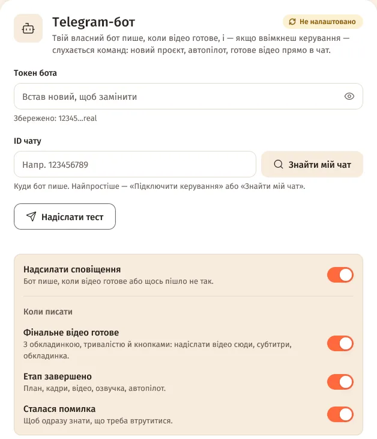
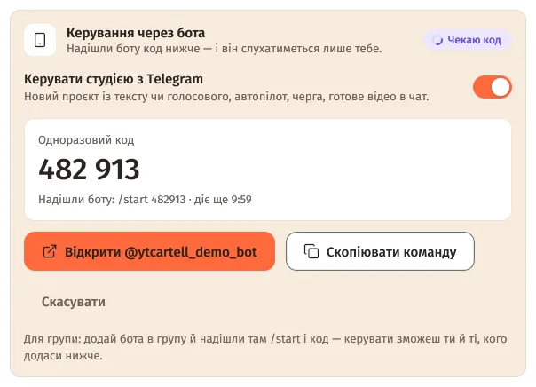
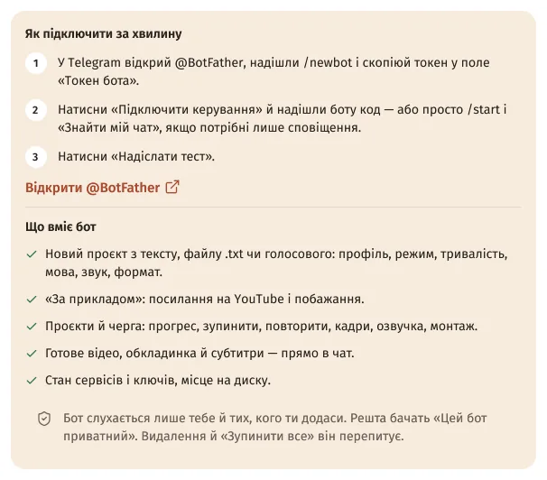
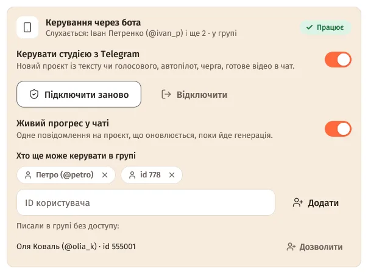

Зміст сторінки
Підключення за 5 хвилин
- Створи бота. У Telegram відкрий @BotFather →
/newbot→ ім'я й username → скопіюй токен. - Встав токен. Студія: Налаштування → «Сповіщення» → картка «Telegram-бот» → «Токен бота» → Enter.
- Отримай код. Блок «Керування через бота» → увімкни «Керувати студією з Telegram». З'явиться «Одноразовий код» — 6 цифр, діє 10 хвилин, лише раз.
- Надішли код боту. «Відкрити @твій_бот» → у Telegram «Почати» — код піде сам. Або «Скопіювати команду» й надішли
/start 482913. - Готово. Бот відповість «✅ Керування підключено…», у студії — «Працює» і «Слухається: твоє ім'я». ID чату підставиться сам.


П'ять неправильних спроб — код скасовується. Натисни «Підключити заново», щоб отримати новий.
Що вміє бот
Кнопки внизу чату: «🎬 Новий проєкт», «🔁 За прикладом», «📁 Проєкти», «⏳ Черга», «⚙️ Профілі», «📊 Статус». Команди: /menu, /new, /remake, /projects, /queue, /status, /cancel, /help.
- Проєкти — по 6 на сторінці. Картка: крок, прогрес, наступна дія, «🚀 Автопілот», «⏹ Зупинити», «🔁 Повторити невдалі», «🖼 Кадри», «🎙 Озвучка», «✂️ Монтаж», «⬇️ Надіслати відео», «📄 .srt», «🖼 Обкладинка», «🗑 Видалити».
- Черга — що генерується, з кнопками зупинки, «⏹ Зупинити все» і нещодавні помилки з «🔁».
- Профілі — профіль за замовчуванням для автопілота й нових проєктів.
- Статус — перевірка всіх сервісів, ключі озвучки, вільне місце на диску, версія.

Новий проєкт із телефона
- «🎬 Новий проєкт» — і надішли історію: текстом, файлом
.txt(до 1 МБ) або голосовим (до 20 МБ). Голосове бот розпізнає сервісом із «Розпізнавання мови» студії й покаже текст на підтвердження. - У відповідь — одне повідомлення з налаштуваннями: «👤 Профіль», «🔀 Режим» (Автопілот або Покроково), тривалість (30 с, 1, 3, 5 хв або своя — від 10 с до 60 хв), «🌐 Мова», «🎙 Звук», «🎞 Що в кадрі», формат 16:9 / 9:16.
- «▶️ Запустити». З автопілотом це ж повідомлення стане живим прогресом.
Надіслав просто текст без команди — бот спитає, чи зробити з нього відео.
Живий прогрес
- Одне тихе повідомлення на роботу: етап, смужка, відсоток і час, кнопки «⏹ Зупинити» й «📂 Проєкт». Оновлюється приблизно кожні 3 секунди.
- Запущене з бота — одразу. Запущене на комп'ютері — через 20 секунд, якщо увімкнено «Живий прогрес у чаті».
- Наприкінці повідомлення стає результатом: «✅» з «⬇️ Надіслати відео», «⚠️» з «🔁 Повторити» або «⏹ … зупинено» з «🔁 Продовжити».
Відео в чат і ліміт 50 МБ
Під повідомленням «🎬 Відео готове» — «⬇️ Надіслати відео сюди», «📄 Субтитри .srt», «🖼 Обкладинка в повній якості». Відео приходить з обкладинкою й дивиться прямо в Telegram.
Telegram приймає від ботів файли до 50 МБ. Якщо фільм більший, бот запропонує варіанти.
| Варіант | Що буде |
|---|---|
| «🗜 Стиснути до 50 МБ» | Копія, що вміщається: якість трохи нижча, 720p, якщо треба. Потрібен FFmpeg. |
| «✂️ Надіслати частинами» | Кілька файлів до 49 МБ, без перекодування. |
| Свій Bot API сервер | Постав telegram-bot-api і впиши його в «Свій Bot API сервер (необов'язково)», напр. http://127.0.0.1:8081 — тоді до 2000 МБ. |
Бот у групі
- Додай бота в групу.
- У студії — «Підключити керування», а в групі надішли
/startі код вручну (кнопка «Відкрити» веде лише в особистий чат). - Кого ще пустити: «Хто ще може керувати в групі» → числовий «ID користувача» (його покаже, напр., @userinfobot) → «Додати». Або «Дозволити» біля тих, хто писав у групі без доступу.

Бот у групі не реагує на звичайний текст чи голосове? Надсилай їх відповіддю (Reply) на повідомлення бота або вимкни в @BotFather режим приватності: /setprivacy → Disable.
Сповіщення
«Надсилати сповіщення» і «Коли писати»: «Фінальне відео готове» (з обкладинкою, тривалістю й кнопками), «Етап завершено», «Сталася помилка». Сповіщення й керування незалежні — можна лишити одне з двох. «Надіслати тест» перевіряє зв'язок.
Безпека
- Бот слухається лише тебе й тих, кого ти додав, і лише в підключеному чаті. Решта бачать «Цей бот приватний» — без назв проєктів і без підказок.
- «🗑 Видалити» і «⏹ Зупинити все» спрацьовують лише з другого натискання (протягом 2 хвилин).
- Поки студія закрита для входу (вікно входу через Telegram), бот відповідає лише «🔒 Студія на комп'ютері зараз закрита для входу…».
- Токен — як пароль: студія показує лише маску й не пише його в журнал. Якщо токен потрапив до чужих — у @BotFather
/revokeі встав новий токен. - «Відключити» — бот перестане слухатися команд, сповіщення працюватимуть.
Обмеження
- Бот працює, лише поки студія відкрита на комп'ютері. Надіслане, поки вона закрита, Telegram зберігає до 24 годин — студія виконає це після запуску.
- Один бот — одна студія. Друга копія на цьому ж комп'ютері чекає. Інша програма чи комп'ютер з тим самим токеном — статус «Не працює» з поясненням і «Спробувати знову».
- Після перенесення налаштувань на інший комп'ютер керування там вимкнене, доки не ввімкнеш.
- Відео від бота — до 50 МБ (або до 2000 МБ зі своїм Bot API сервером); бот приймає файли до 20 МБ.
Питання
Чи бачить бот мої повідомлення в інших чатах?
Ні. Бот отримує лише те, що надіслано йому або в групу, де він є, і виконує команди тільки з підключеного чату.
Як прибрати бота?
«Відключити» в картці «Telegram-бот». Щоб бот зовсім не працював, видали токен із поля або сам бот у @BotFather.
Це той самий бот, що для входу в студію?
Ні. Вхід — через бота спільноти, а цей бот — твій власний, створений у @BotFather.